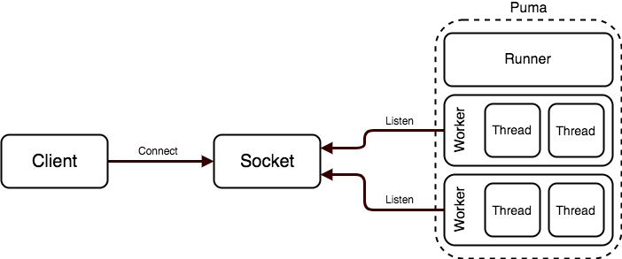

Architecture
Overview

Puma is a threaded Ruby HTTP application server processing requests across a TCP
and/or UNIX socket.
Puma processes (there can be one or many) accept connections from the socket via
a thread (in the Reactor class). The connection,
once fully buffered and read, moves into the todo list, where an available
thread will pick it up (in the ThreadPool
class).
Puma works in two main modes: cluster and single. In single mode, only one Puma
process boots. In cluster mode, a master process is booted, which prepares
(and may boot) the application and then uses the fork() system call to create
one or more child processes. These child processes all listen to the same
socket. The master process does not listen to the socket or process requests -
its purpose is primarily to manage and listen for UNIX signals and possibly kill
or boot child processes.
We sometimes call child processes (or Puma processes in single mode)
workers, and we sometimes call the threads created by Puma's
ThreadPool worker threads.
How Requests Work

- Upon startup,
Pumalistens on a TCP or UNIX socket.- The backlog of this socket is configured with a default of 1024, but the
actual backlog value is capped by the
net.core.somaxconnsysctl value. The backlog determines the size of the queue for unaccepted connections. If the backlog is full, the operating system is not accepting new connections. - This socket backlog is distinct from the
backlogof work as reported by Puma.stats or the control server. The backlog that Puma.stats refers to represents the number of connections in the process'todoset waiting for a thread from theThreadPool.
- The backlog of this socket is configured with a default of 1024, but the
actual backlog value is capped by the
- By default, a single, separate thread (created by the
Reactorclass) reads and buffers requests from the socket.- When at least one worker thread is available for work, the reactor thread listens to the socket and accepts a request (if one is waiting).
- The reactor thread waits for the entire HTTP request to be received.
- Puma exposes the time spent waiting for the HTTP request body to be
received to the Rack app as
env['puma.request_body_wait'](milliseconds). - Once fully buffered and received, the connection is pushed into the "todo" set.
- Worker threads pop work off the "todo" set for processing.
- The worker thread processes the request via
calling the configured Rack application. The Rack application generates the HTTP response. - The worker thread writes the response to the connection. While Puma buffers requests via a separate thread, it does not use a separate thread for responses.
- Once done, the thread becomes available to process another connection in the "todo" set.
- The worker thread processes the request via
queue_requests
The queue_requests option is true by default, enabling the separate reactor
thread used to buffer requests as described above.
If set to false, this buffer will not be used for connections while waiting
for the request to arrive.
In this mode, when a connection is accepted, it is added to the "todo" queue immediately, and a worker will synchronously do any waiting necessary to read the HTTP request from the socket.